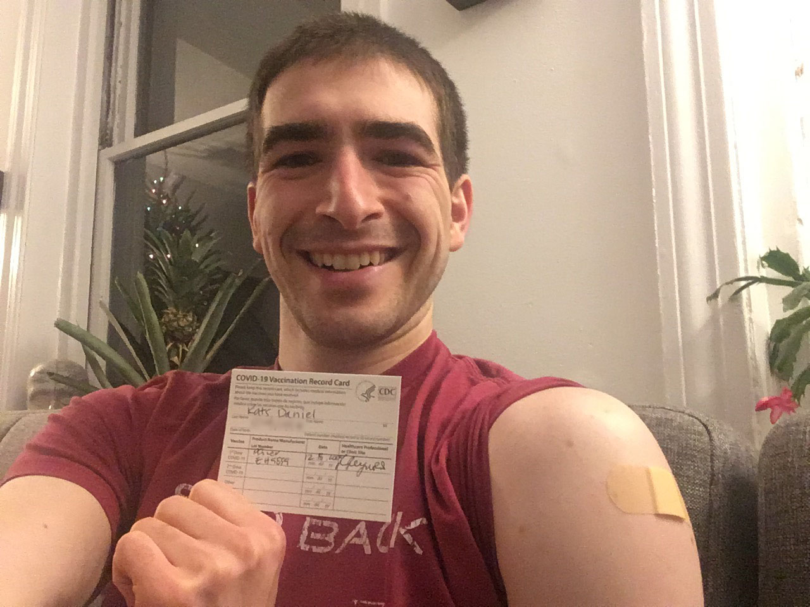
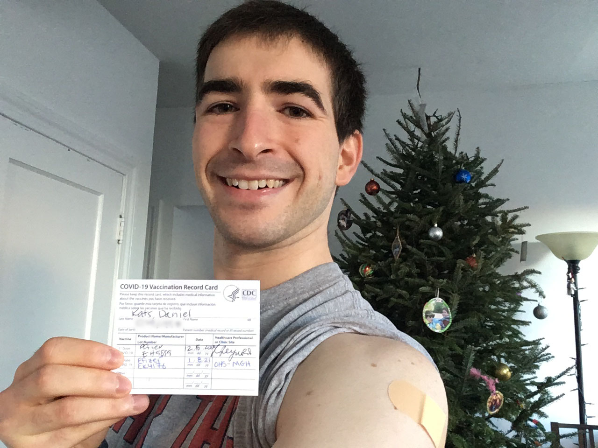

COVID-19 (the 2019 coronavirus)
Also: SARS-CoV-2 (severe acute respiratory syndrome coronavirus 2), 2019-nCov (2019 novel coronavirus)
Last updated: August 30, 2020
Terminology
Before we dive into this virus and disease, I want to clarify the name. Coronavirus
by itself doesn't mean much. The coronaviruses are actually a family (group) of viruses that include the common cold, Middle East Respiratory Syndrome (MERS-CoV), severe acute respiratory syndrome (SARS-CoV-1; SARS
), COVID-19, and others. Since these have a huge range in severity, the label coronavirus
by itself isn't scary (but also isn't reassuring). It's really just a label that doesn't give a whole lot of information. This page is about SARS-CoV-2, which is the "coronavirus" pandemic that occurred from 2019–2020.
What's the difference between COVID-19, SARS-CoV-2, and 2019-nCov?
2019-nCov (which stands for: 2019 novel coronavirus
) is the original name for the virus.
SARS-CoV-2 (which stands for: severe acute respiratory syndrome coronavirus 2) is the new, more descriptive name of the virus. Rather than being a novel (new) coronavirus, this name explains that it causes severe acute respiratory syndrome, meaning it causes severe and fast injury to the lungs. SARS-CoV-1 is a different virus (originally named SARS-CoV, but renamed to SARS-CoV-1 when SARS-CoV-2 was named) was responsible for the SARS epidemic in 2002–2004.
COVID-19 (which stands for: coronavirus disease 2019) is the disease caused by SARS-CoV-2. The difference is that virus is infects you, but the disease is feeling sick. This is similar to strep throat, which is a disease caused by the bacterium Streptococcus pyogenes. In other words, you can be infected with the virus, but can feel completely fine. Actually, this is usually the case, but some infections develop into the disease. The disease itself can also look many different ways. Some people might have a mild fever, but others might develop a severe lung injury that requires them to be put on a breathing machine.
Signs and Symptoms
It takes about 2–14 days after infection (usually 4–5) for the virus to build up and cause signs and symptoms. These include (most frequent to least frequent):
- Fever
- Fatigue
- Dry cough
- Lack of appetite
- Muscle/body aches
- Shortness of breath
These signs and symptoms are also frequently seen in other diseases, like the common cold, the flu, and seasonal allergies, which makes it hard to distinguish COVID-19 from them. It seems that fever, dry cough, and shortness of breath are particularly common in COVID-19, and diarrhea, runny nose, and sneezing are uncommon.
In kids, it's much more complicated with a wider variety in symptoms. In the first group of kids for which data is available, less than half had a fever (at any point in the illness). Cough and throat redness were also relatively common.
It is also important to point out that not everyone infected with SARS-CoV-2 will have symptoms or feel sick. Normally, we would think this is good (and it is), but it comes with a major drawback: people can feel totally fine, but can also be infected and contagious. They can then pass the virus onto other people who are at high risk for becoming severely sick.
If you think you are sick, call your local COVID-19 hotline. Do not show up without warning to a clinic or hospital. It's important to safely get you to the right place with the right resources. The U.S. Centers for Disease Control and Prevention has a webpage with steps to take if you think you may be infected with SARS-CoV-2.
Pregnancy and Newborns
Pregnant mothers do not pass the infection onto their children while in the womb, but may transmit the infection during delivery and afterwards. Breastmilk is safe, so infected mothers are allowed to pump and have their babies fed with the pumped milk.
- Cao, Q., Chen, Y., Chen, C., et al. SARS-CoV-2 infection in children: Transmission dynamics and clinical characteristics. J Formos Med Assoc. 2020, 119(3): 670–673.
- Chen, H., Guo, J., Wang, C., et al. Clinical characteristics and intrauterine vertical transmission potential of COVID-19 infection in nine pregnant women: a retrospective review of medical records. Lancet. 2020, 395(10226): 809–815.
- Fan C., Lei D., Fang C., et al. Perinatal Transmission of COVID-19 Associated SARS-CoV-2: Should We Worry? Clin Infect Dis. 2020.
- Puopolo, K.M., Hudak, M.L., Kimberlin, D.W., et al.Initial Guidance: Management of Infants Born to Mothers with COVID-19. American Academy of Pediatrics Committee on Fetus and Newborn, Section on Neonatal Perinatal Medicine, and Committee on Infectious Diseases. 2020.
Prevention
The absolute best ways to prevent infection/spread of the virus are to:
- Hand washing: for 20 seconds (2 Happy Birthday songs); hand sanitizer with at least 60% alcohol is the next best choice, but nothing is better than hand washing.
- Wearing a mask
- Covering coughs and sneezes with your elbow, not your hand: sneezes launch tiny droplets filled with viruses up to 30 feet away, so cover up!
- Avoid touching your face, especially the eyes, nose, and mouth, because those are the only ways the virus can get into your system. It's really hard to not touch your face, so it takes a lot of concentration and practice to break down those habits.
- Avoid crowds: in general, stay at least 6 feet (2 meters) away from everyone else.
- Clean your house and belongings! The Centers for Disease Control have a thorough webpage with lots of details and instructions on how to properly clean.
Social distancing is very important in limiting the spread of the virus and keeping people as safe as possible.
- Stay at home as much as possible (get groceries no more than once per week, and stay home otherwise)
- Don't gather in groups
- If spending time with other people, stay at least 6 feet (2 meters) away from everyone at all times
- Don't shake hands or hug: the best option is to stay away and not touch people, but fist-bumping is a good middle ground to limit physical contact.
Check out this great page from the Washington Post that runs through different levels of limiting the spread of a virus.
One of the most challenging parts of physical distancing or quarantining is having to completely change the flow of your everyday life. The American Academy of Pediatrics has a great webpage with tips for how to keep your kids occupied when they are out of school for an extended time. These are also great times to work on being active and exercising. I have a separate website with ideas for how to be active and get exercise at home without any equipment (and there are ideas that are kid-friendly).
Vaccine
The vaccines are an incredibly safe and effective way to prevent COVID-19. I was fortunate to be able to get the Pfizer/BioNTech vaccine shortly after it was approved, and it was an amazing experience. Here's my personal experience with the vaccine:
|
I received my first dose of the Pfizer/BioNTech vaccine on 12/18/2020 at 5pm. The atmosphere in the vaccine clinic was basically giddy. I was probably the nurse's 100th shot of the day, but she greeted me with, "Isn't this exciting??" Everyone was smiling, laughing, and excited for protecting ourselves against this virus. The nurse giving me the shot wasn't scheduled to get one herself, yet, because she was in a later wave. This felt a bit weird that she was doing such important work protecting others without being able to protect herself, but I'm proud to call such an honest and selfless person one of my colleagues Here's how I felt in the days after the vaccine: Day 0 (the day I got the shot): I felt absolutely nothing other than hope. No soreness, no pain, just joy. Day 1: I woke up with mild shoulder soreness, just like with any other shot. I felt totally normal otherwise. Day 2: I had some resolving mild shoulder soreness, but it was barely noticeable. And no other symptoms. Woo! Day 3: Totally back to baseline! I received my second dose of the Pfizer/BioNTech vaccine on 1/8/2021 at 8am (21 days/3 weeks after the first shot). It was a much less emotional experience than the first time…until the nurse said "You're fully vaccinated!" Here's how I felt in the days after the second dose: Day 0 (the day I got the shot): I gradually developed increasing soreness at the injection site throughout the day, but it was never more than a mild pain that was only noticeable when I pushed on the injection site or stretched my shoulder. I stayed hydrated during the day, but I did not take any acetaminophen or ibuprofen. Day 1: I woke up with worse pain around the injection site than when I went to bed, but still mild and not limiting me in any way. Other than that, feeling great! Day 2: My shoulder soreness was basically non-existent when I woke up. I went on a 10 mile hike and felt great! |
Taking Care of Kids During a Pandemic
With all of the disruptions to people's normal schedules that this pandemic has caused, kids may be confused, worrying, or asking questions. While these are difficult conversations, they are important to have. Here are some tips on how to help your kids with the transition to life with physical distancing and without school.
Your kids likely know that something is different and serious, so be upfront and ask your kids what they know and ask if they have questions. Do the best you can with answering them as honestly as possible. It's ok to admit that you're worried, but also explain what you and the government have been doing to keep them safe. If your kids are also worried, validate their feelings, but also reassure them about what protections are in place.
- 7 Ways to Support Kids and Teens Through the Coronavirus Pandemic (including tips for different developmental levels) (Español: 7 Maneras de Apoyar a Niños y Adolescentes Durante la Pandemia del Coronavirus)
- How to Talk to Your Kids About Coronavirus (YouTube)
- How to Talk to Your Children About the Coronavirus (COVID-19)
- Talking with children about Coronavirus Disease 2019: Messages for parents, school staff, and others working with children
- Talking to Children About COVID-19 (Coronavirus): A Parent Resource
- Talking to Kids About the Coronavirus (Español: Cómo hablar con los niños sobre el coronavirus)
- Positive Parenting & COVID-19: 10 Tips to Help Keep the Calm at Home
- Tips for Coping with a New Baby During COVID-19
- HealthyChildren.org: Getting Children and Teens Outside While Social Distancing for COVID-19
- HealthyChildren.org: Halloween & COVID-19: Have Fun While Staying Safe
School During the Pandemic
Family Tools
Disruptions to daily schedules, especially when combined with a potential threat to your family's health, are incredibly stressful times. It's important to practice self-care and to learn how to handle everyone's emotions. Below are some articles and websites that have different tips and tricks for managing stress and taking care of yourself.
- Self-Care for Resilience – Resources
- 10 Self-Care Tips for Parents
- 11 Self-Care Tips for Teens and Young Adults
- Parenting Through Community Crises & Disasters
- Parent/Caregiver Guide to Helping Families Cope With the Coronavirus Disease 2019 (COVID-19)
- Helping Homebound Children during the COVID-19 Outbreak
- Taking Care of Your Family During Coronavirus and Other Emerging Infectious Disease Outbreaks
- The American Academy of Pediatrics Advises Parents Experiencing Stress over COVID-19
Recommended Reading
- HealthChildren: A resource for parents by the American Academy of Pediatrics
- World Health Organization: COVID-19 Myths
- World Health Organization: COVID-19 Questions and Answers
- 7 Dangerous Myths About The COVID-19 Coronavirus Pandemic